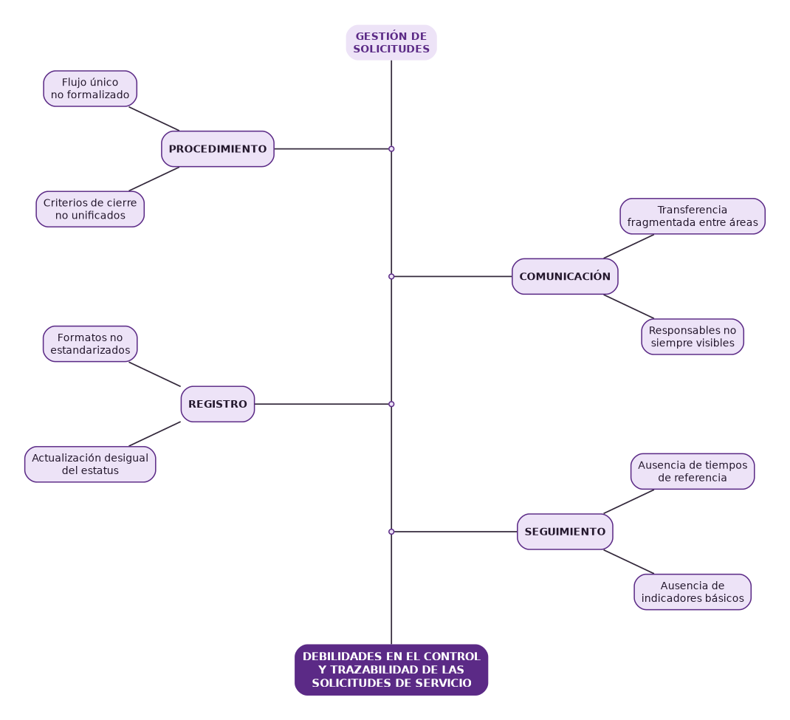
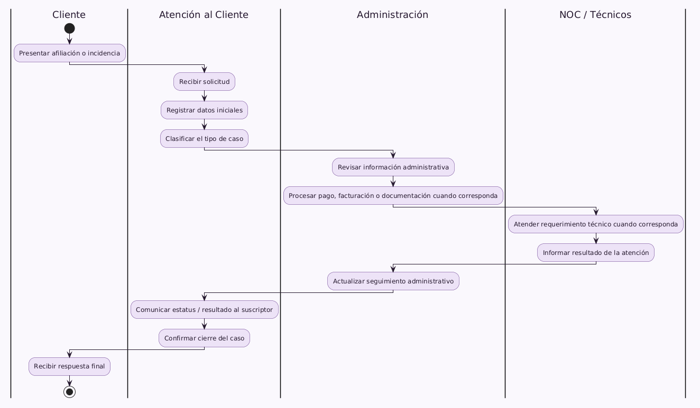

el recorrido actual de las solicitudes.
deficiencias, causas y efectos.
mejoras procedimentales.

Verificar el proceso y corregir desviaciones.
Recibir, registrar, procesar, seguir y cerrar.
Reconstruir el recorrido completo de un caso.
Aplicar criterios, estados y formatos comunes.
Artículo 112 · Marco general de la actividad económica.
Artículo 32 · Orden y claridad de los registros.
Atención al Cliente y Administración.
Registros, personal e identificación de fallas.
Organización de causas relacionadas.
Flujo, formatos, responsables e indicadores.

El recorrido existía, pero no estaba formalizado como un solo proceso.
Formatos, estatus, tiempos y comunicación afectaban la trazabilidad.
Flujo, responsables, formatos e indicadores permiten fortalecer el control.
Probar el flujo → uniformar formatos → medir resultados → evaluar digitalización.
Fortalecer el acompañamiento académico.
Registrar actividades y conservar evidencias.